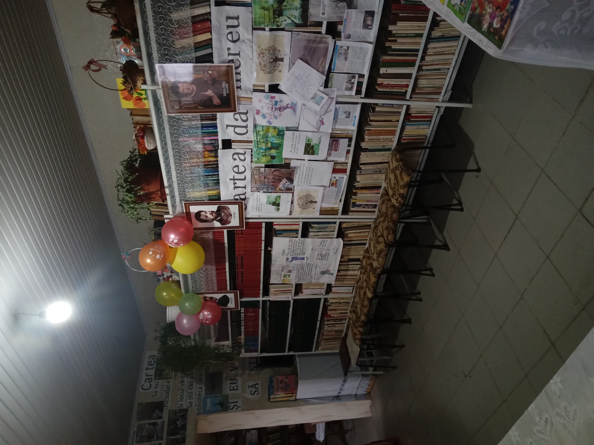
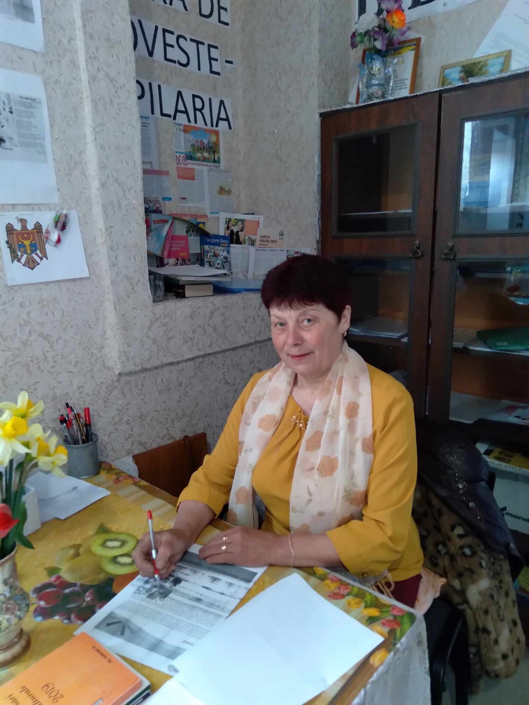

Biblioteca Enichioi
Date generale
Biblioteca publică Enichioi este amplasată în clădirea casei de cultură și se află într-o stare satisfăcătoare. Biblioteca nu dispune de utliaj și de tehnică modernă (calculatoare, internet, mobilier). Se încălzește cu reșou electric. Suprafața bibliotecii este de 30 m pătrați. Localitatea este populată de oameni gospodari și onești în număr de 1360 de persoane (760-femei, 600-bărbați). A fost înființată în anul 1859. Prima bibliotecară a fost Tănase Ecaterina după a urmat Nicu Silvia care este și în prezent. Cu un deosebit respect și stimă atât copiii cât și maturii vin în bibliotecă. Aici se petrec diferite activități culturale pe diferite teme cum ar fi: sărbătorile de iarnă, sărbatorile jubiliare, etc.
 |
Luni | 08:00-15:00 |
| |
Marți | 08:00-15:00 |
| |
Miercuri | 08:00-15:00 |
| |
Joi | 08:00-15:00 |
| |
Vineri | 08:00-15:00 |
| Sâmbătă | Liber | |
| Duminică | Liber |
Date biografice
Nicu Silvia Vasili născută în satul Enichioi raionul Cantemir la data de 20 noiembrie 1960. Activiatatea bibliotecarei Nicu Silvia a început în 1978 după absolvirea clasei a XII-a, studiile le-a petrecut la școala din Soroca "Elena Sârbu". A terminat studiile în anul 1983. Studiile bibliotecarei Nicu Silvia: studii medii speciale, gradul I de calificare. A început a lucra în acestă bibliotecă cu mare dragoste față de literatură, utilizatorii atrăgându-i în bibliotecă cu zâmbetul pe față și cu o dorință de a citi și a lua cât mai multe informații din literatura din bibliotecă.
| Data | Evenimentul | Activitatea | Responsabilul |
|---|---|---|---|
| 24.02.2024 | Ziua dragostei și a bunăvoinței, dragobetele | Oră literară:„ Dragostea-ușa spre fericire" | Nicu Silvia-bibliotecară |
| 01.03.2024 | Ziua mărțișorului | Recital de poezie | Nicu Silvia-bibliotecară |
| 01-07.03.2024 | Zilele lui Creangă în bibliotecă 1839-1889 | Ora literară:„Sfătosul bunic din Humulești” | Nicu Silvia-bibliotecară |
| 08.03.2024 | Ziua Internațională a Femeilor | Recital de poezie | Nicu Silvia-bibliotecară |
| 01-07.04.2024 | Ziua umorului, săptămâna lecturii | Jocuri distractive | Nicu Silvia-bibliotecară |
| 23.03.2024 | Ziua Bibliotecarului | Ora literară:„ Bibliotecarul-ghid în lumea cărților” | Nicu Silvia-bibliotecară |
| 01.05.2024 | Ziua Internațională a solidarității oamenilor muncii | Ora literară:„ Fără muncă viață nu este” | Nicu Silvia-bibliotecară |
| 08-22.05.2024 | Petru Hadîrca 65 ani de la naștere, Ziua Victoriei, Ziua localității | Recital de poezie:„ Nimeni nu-i uitat, nimeni nu se uită” | Nicu Silvia-bibliotecară |
| 01.06.2024 | Ziua Internațională a copiilor | Matineu:„ Copilărie dulce păpădiei” | Nicu Silvia-bibliotecară |
| 02.07.2024 | Comemorarea lui Ștefan cel Mare | Expoziție de carte:„ Ștefan cel Mare-idealul nostru | Nicu Silvia-bibliotecară |
| 27.08.2024 | Ziua Independenței | Expoziție de carte | Nicu Silvia-bibliotecară |
| 31.08.2024 | Limba noastră | Recital de poezie | Nicu Silvia-bibliotecară |
| 01.09.2024 | Ziua Cunoștințelor | Oră literară:„ Învățătura e o perlă, o avere mare care nu se împuținează prin dăruire | Nicu Silvia-bibliotecară |
| 01-30.10.2024 | Ziua Internațională a oamenilor în etate | Recital de poezie:„ Bunicuțe hărnicuțe | Nicu Silvia-bibliotecară |
| 05.10.2024 | Ziua Mondială a Pedagogului | Recital de poezie:„ Scumpii mei învățători” | Nicu Silvia-bibliotecară |
| 05-20.11.2024 | Ziua Internațională a dreptului copilului | Seminar: Drepturile și obligațiile copiilor | Nicu Silvia-bibliotecară |
| 03.12.2024 | Ziua Internațională a persoanelor cu dizabilități | Seminar: Persoanele cu dizabilități-drepturi egale în societate | Nicu Silvia-bibliotecară |
Contacte
Adresa: Satul Enichioi, raionul Cantemir
 Facebook: Nicu Silvia
Facebook: Nicu Silvia{kind=link}
Adresa: Satul Enichioi, raionul Cantemir